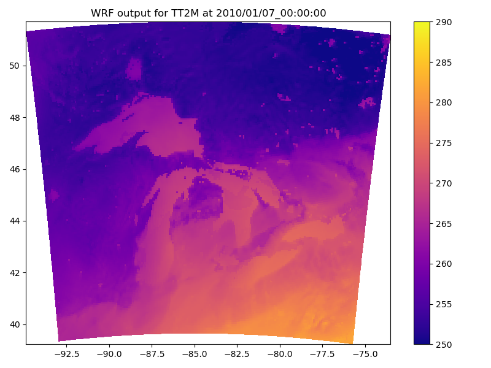
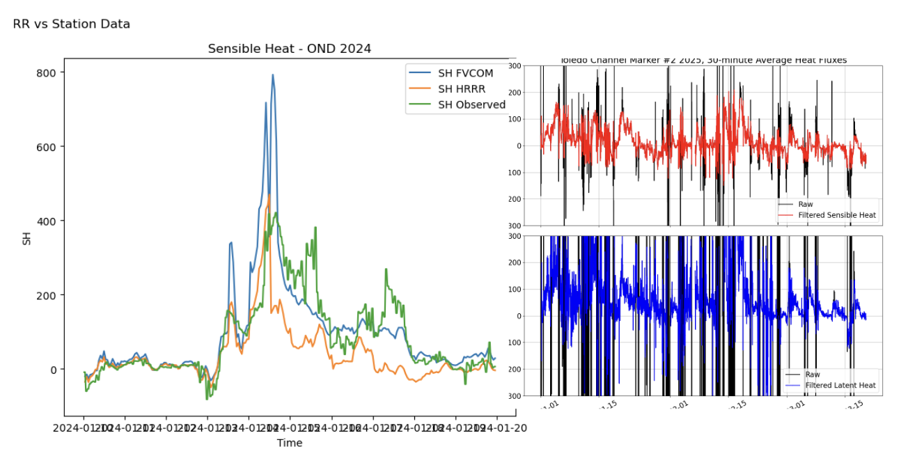

Weather and Climate Research
Throughout my career, I have leveraged my solid background in programming to fuel my passion for meteorology and climate research. I currently work on projects for the Cooperative Institute for Great Lakes Research (CIGLR) and have previously interned at the National Weather Service. My interests lie in climate modeling, surface analyses, and data-driven approaches to understanding the atmosphere. These projects are a few I have contributed to professionally or as personal projects and span much of my experience with software development, machine learning, and scientific research.
Projects

Great Lakes Regional Climate Model
Currently assisting on CIGLR's GLWRF project by downscaling Global Climate Data using the WRF Model to a 1km grid over the Great Lakes region. Evaluating model performance of a two-way coupled Lake-Atmosphere regional climate model against satellite and station observation data.

Heat and Moisture Flux Model Verification
Currenly supporting CIGLR and GLERL's work by analyzing vertical heat flux outputs from the GLCFS models and comparing them with observations from the Great Lakes Evaporation Network (GLEN). Evaluating and presenting case studies of heat and moisture fluxes during historic Lake-Effect Snow (LES) Events in the Great Lakes to improve model sensitivity.

Built and tested GRU and LSTM-based Recurrent Neural Networks on Global Historical Climatology Network daily climate summaries (GHCNd) for Ann Arbor and nearby stations. For point-based Snow Depth predictions, achieved 0.1435 inch Mean Absolute Error on all datapoints and 0.6818 inch MAE on non-zero points against historical observations.

Developed and expanded a wildfire simulation environment that combines interactive visualization with agent-based learning for fire mitigation. Built a sandbox using color and depth sensors to display fire spread across user-shaped terrain, with real-time input for vegetation and mitigation techniques.
Get In Touch
Email me anytime or connect with me on LinkedIn